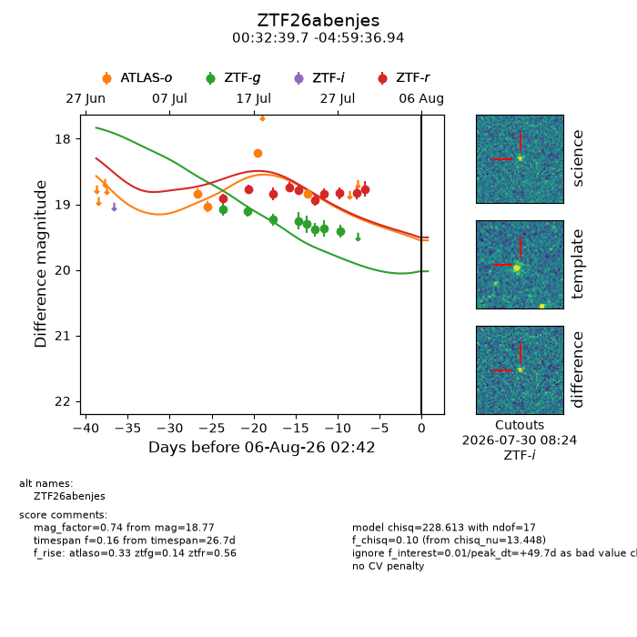
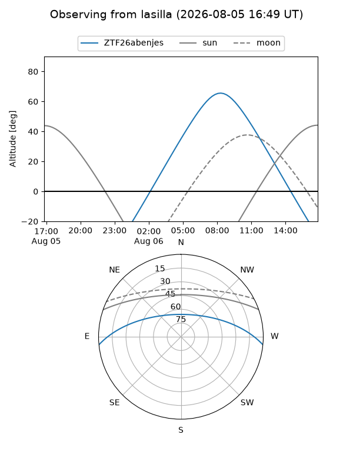
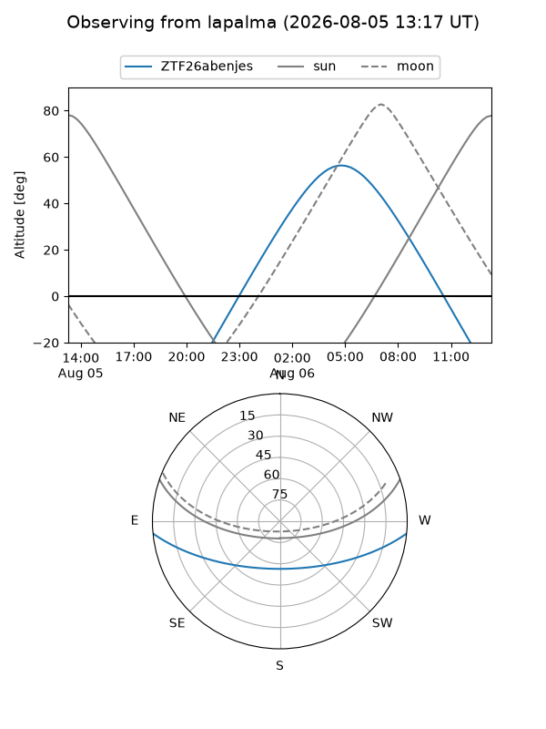
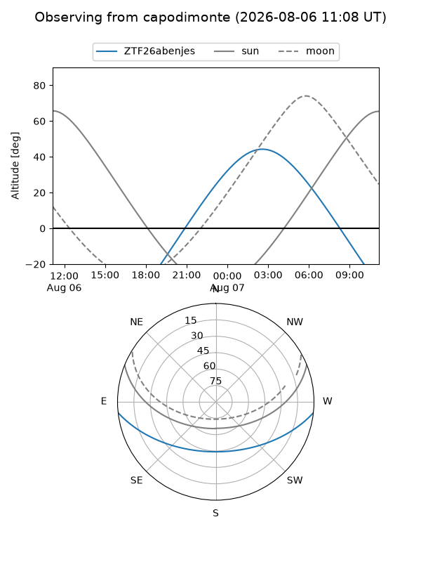
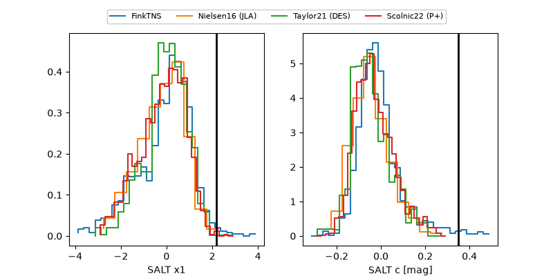

ZTF26abenjes
Target ZTF26abenjes at 2026-08-06 14:06
Aliases and brokers:
FINK-ZTF: ztf.fink-portal.org/ZTF26abenjes
Lasair-ZTF: lasair-ztf.lsst.ac.uk/objects/ZTF26abenjes
ALeRCE-ZTF: alerce.online/object/ZTF26abenjes
Direct TNS query: direct search
alt names
ZTF26abenjes (ztf,fink_ztf)
Coordinates:
equatorial (ra, dec) = 8.1655,-4.99360
equatorial (HMS+DMS) = 00:32:39.72,-04:59:36.94
galactic (l, b) = (110.6752,-67.41744)
Flags:
peak dt: +50.2
Photometry:
last atlaso=18.84, ztfg=19.41, ztfr=18.77
4 atlaso, 8 ztfg, 10 ztfr detections
Lightcurve

Visibility



Additional plots
